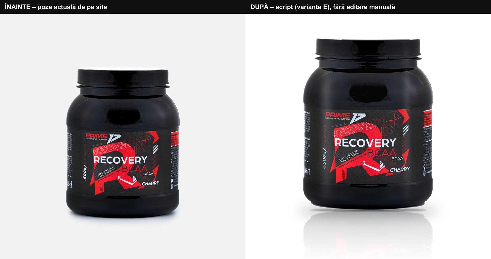
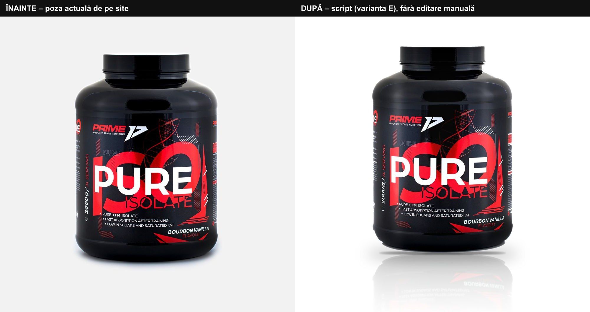
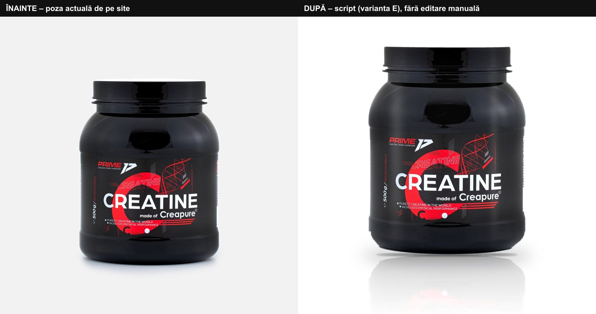
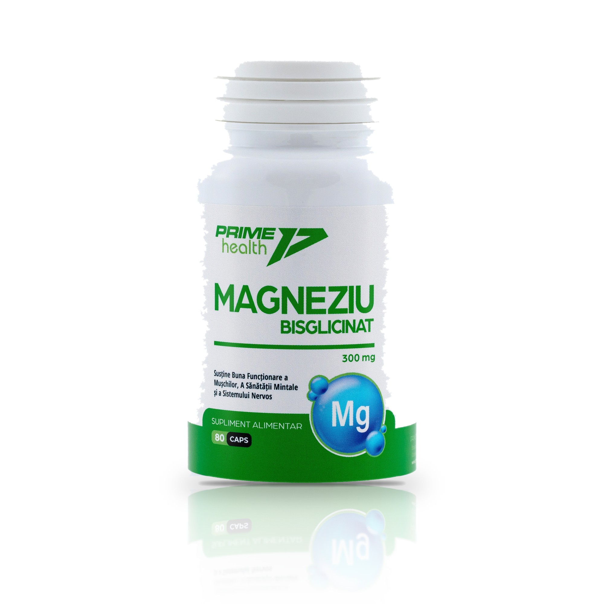

Pozele de produs Genius Nutrition: cum sunt făcute și ce putem face noi
Data: 16.11.2026 · Cerut de Marius · Doar analiză și demo local. Nimic modificat sau urcat în magazin.
Versiunea cu imagini adnotate: RAPORT-POZE.html, deschisă local (pozele Genius rămân doar pe PC, în decupaje/, care nu intră în git).
Ce s-a mai făcut înainte (verificat în repo)
- 15.11: analiza paginii de produs vizuale Genius și pagina noastră vizuală (
pagina-produs-vizuala/). Atunci am studiat descrierea (tab-ul „Despre produs”), nu pozele de produs. Decizia de atunci rămâne: structura se poate prelua, texte, poze sau cod nu. - 15.11 (noaptea): pentru pozele din pagina vizuală am decis sportivi bărbați și cadre reale din ședința foto, nu femei generate cu AI.
- Sesiunea paralelă
analiza-genius-vs-prime/(16.11) face comparația SEO și de viteză. Analiza de față e doar despre poze, fără dubluri.
1. Rezumat
| Întrebare | Răspuns | Încredere |
|---|---|---|
| Ce efecte folosesc? | Fundal alb pur, reflexie pe podea care se estompează, umbră de contact fină, luciu de studio (benzi speculare verticale pe plasticul negru), contur luminos pe margini (rim light), folie holografică randată pe etichetă. Pe pozele secundare: scene 3D (jeleuri, stropi, podea udă) și câteva scene de tip AI (plajă). | mare |
| Sunt „arse” în imagine sau făcute din cod? | În imagine. Fișierul de pe CDN are deja luciul, umbra și reflexia. Din cod au doar două lucruri: schimbarea pozei la hover (a doua poză apare în 0,3 s) și o animație zoom-fade când cardul intră în ecran. Fără shine sweep, fără drop-shadow, fără -webkit-box-reflect, fără canvas, WebGL sau 3D interactiv. |
mare (cod citit direct) |
| Cu ce program? | Pozele principale sunt randări 3D ale ambalajului, cu eticheta aplicată ca textură. Cel mai probabil un program de randare de produs (KeyShot, Blender sau Cinema 4D) cu iluminare HDRI de studio și podea reflectorizantă, apoi export PNG 3800 px. Programul exact nu se poate dovedi: Shopify a șters toată metadata. | mare că e randare 3D; mică pentru numele programului |
| Putem face la fel? | Da. Aspectul identic se obține doar cu randare 3D (varianta B). Un aspect apropiat, aplicat pe pozele actuale, se obține gratuit cu scriptul nostru (varianta E), care merge bine pe borcanele negre. | – |
| Recomandare | E acum (gratuit, borcanele negre, cu verificare vizuală), apoi B treptat (randări 3D pentru cele 4–5 tipuri de ambalaj, pornind de la top vânzări), plus D doar pentru schimbarea pozei la hover, ca la Genius, dacă aprobi designul. C (AI) doar pentru fundaluri și scene, niciodată pentru regenerarea etichetei. | – |
2. Catalogul efectelor (cu dovezi)


Zoom pe efecte (decupaje din originalul de 3800 px)


Planșele de contact


Material analizat: 23 de produse Genius, 61 de poze descărcate la rezoluția originală. Lista e în date/genius-poze.json: pudre în borcan alb și negru, capsule, gainer, pre-workout, baton, shot, doză, produse noi din 2026 și produse vechi din 2024. Am inspectat homepage-ul, 3 categorii (proteine, aminoacizi, produse noi) și 3 pagini de produs, pe desktop și pe mobil.
| # | Efect | Ce se vede la zoom 200–400 % | Tehnica cea mai probabilă | Program probabil | Încredere |
|---|---|---|---|---|---|
| 1 | Reflexie pe podea | Sub bază apare eticheta răsturnată și estompată. Blurul crește cu distanța față de contact: lângă bază „26” e lizibil, mai jos textul devine dâre verticale. Curbura bazei e redată corect. | Podea reflectorizantă cu rugozitate („glossy ground”) într-un randor. Un flip copiat în Photoshop ar avea același blur peste tot. | Randor 3D (opțiunea „ground reflections” din KeyShot sau un plan lucios în Blender) | mare că e fizică; medie că nu e Photoshop |
| 2 | Umbră de contact | O linie gri foarte fină chiar sub bază, fără umbră proiectată lateral. | Ambient occlusion sau umbră de contact din randor, cu lumina venind de sus și din față | Randor 3D | mare |
| 3 | Benzi speculare (luciu) | Pe capacele și umerii negri apar 2 benzi verticale deschise, simetrice, care urmează exact curbura. Pe capacele albe mate apare un gradient moale. | Reflexia a două softbox-uri sau a unui HDRI de studio pe material lucios, calculată de randor. Nu e pictată: forma urmează perfect geometria. | Randor 3D | mare |
| 4 | Rim light (contur luminos) | Marginea borcanului e puțin mai deschisă, eticheta se întunecă spre margini (falloff cilindric), iar literele se comprimă spre margine. | Iluminare de contur plus proiecția cilindrică a etichetei pe model | Randor 3D | mare |
| 5 | „Sclipiri” holografice | Benzile curcubeu de pe etichetă și contururile literelor („BCAA”, „ISOLATE”) sunt gradiente perfect netede. | Folia holografică a ambalajului real e simulată în randare (gradient sau material iridescent). Nu e un overlay peste poză: se curbează odată cu eticheta. | Grafica etichetei (Illustrator) plus material sau textură în randor | medie |
| 6 | Splash-uri și fructe de pe etichetă | Fac parte din grafica tipărită a etichetei: se curbează cu cilindrul și se pierd spre margine. | Grafică de etichetă (foto de stoc sau randare de lichid), nu efect peste poză | Photoshop sau Illustrator pentru etichetă | mare |
| 7 | Fundal | Colțurile au exact RGB 255,255,255 la 56 din 61 de poze. Pozele sunt PNG RGBA, dar opace (fundal alb lipit, nu transparent). | Export din randor cu fundal alb pur | – | dovedit (pixeli) |
| 8 | Scene secundare (CELL-X7, CREA-X5) | Jeleuri cu translucență (subsurface), stropi de apă, podea udă cu reflexii colorate, perspectivă coerentă | Scenă 3D completă sau compoziție 3D + elemente de stoc | Randor 3D + Photoshop | medie |
| 9 | Scena „plajă” (WHEY-X5, poza 2) | JPG 2500 px. Textul mic e „topit” și ilizibil, iar spuma din pahar are o textură nerealistă. Eticheta mare e corectă. | Fundal și elemente probabil generate cu AI, cu borcanele randate puse peste (sau generate pornind de la o imagine de referință) | Unealtă AI de imagine + Photoshop | medie |
| 10 | Batonul, pozele 2 și 3 | Fundal portocaliu, baton desfăcut, ciocolată cu textură reală, JPG 2160 px | Fotografie reală sau scenă AI; aici nu e randare de ambalaj | – | mică |
Dovezi că pozele principale sunt randări 3D, nu fotografii
- Zgomot: am măsurat abaterea standard a reziduului trece-sus pe zonele uniforme (
scripts/zgomot.py,date/zgomot.json). Mediana Genius e 0,36, cea Prime 1,23. Fotografiile reale (ale noastre) au zgomot de senzor, randările nu au aproape deloc. - Consistență: același unghi de cameră (puțin de sus), aceeași lumină și aceeași reflexie pe toate cele 23 de produse, de la borcane albe la negre. Etichetele sunt perfect drepte și centrate, fără praf, zgârieturi sau imperfecțiuni de plastic.
- Dimensiuni identice: 3800×3800 px la aproape toate pozele noi, cu DPI 72 sau 300 după lot. E tipic pentru un preset de export din randor, folosit de cineva care randează în loturi.
- Error Level Analysis nu se aplică: fișierele sunt PNG (fără pierderi), așa că ELA nu dă rezultat. Am folosit în locul ei analiza zgomotului de mai sus.
Metadata (pasul 3)
- exiftool și c2patool nu sunt instalate pe PC. Am citit metadata cu Pillow (EXIF, XMP, ICC, chunk-uri PNG) și c2pa-python (biblioteca oficială C2PA):
scripts/metadata.py,date/metadata-*.json. - Rezultat: Shopify a șters tot, la ambele magazine: 0 XMP, 0 EXIF utile, 0 istoric Photoshop, 0 CreatorTool, 0 Content Credentials (C2PA). Profilul ICC, unde există, e „c2ci”, profilul sRGB compact pe care îl pune conversia Shopify, deci fișierele de pe CDN sunt reprocesate. Am descărcat fișierele „originale” (URL fără parametri, Accept PNG/JPEG), dar și acestea trec prin conversie.
- Concluzie: programul exact (KeyShot, Blender, C4D) și eventualul AI de pe scena „plajă” nu se pot dovedi din metadata. Ce scrie mai sus despre ele e dedus vizual.
- Nutriland:
products.jsonși căutarea au răspuns cu 429 (limită de cereri). Nu am insistat, ca să respectăm regula de crawl politicos. Comparația cu Nutriland rămâne deschisă: se poate face manual, din browser, dacă vrei.
3. Ce e în imagine și ce e din cod (pasul 2)


Inspecție cu Playwright și Chrome, pe 7 pagini Genius × desktop și mobil (scripts/inspecteaza.mjs, date/inspectie-genius.json), plus regulile CSS exacte (scripts/reguli-css.mjs, date/reguli-css-genius.txt). Am înregistrat și video (video/, doar local).
| Ce am căutat | Genius |
|---|---|
filter, drop-shadow, box-shadow pe imagine |
nu |
-webkit-box-reflect, mask, mix-blend-mode |
nu |
shine sweep (::before/::after cu gradient animat) |
nu |
| canvas, WebGL, three.js, model-viewer, Lottie, GIF sau APNG | nu (0 elemente) |
| video | doar un banner MP4 pe homepage, nu pe produse |
| schimbarea pozei la hover | da: .product-card__image--alternate { opacity:0 } → la :hover opacity:1, transition: .3s (tema Pursuit 1.0.7) |
| animație la apariție | da: @keyframes zoom-fade { 0% {opacity:0; transform:scale(1.25)} 100% {opacity:1; transform:scale(1)} }, 0,5 s |
| Comparația poză CDN vs pagină | identice: luciul, umbra și reflexia sunt deja în fișier |
Concluzie: tot ce „lucește și sclipește” e în fișierul imagine. Codul doar schimbă poza la hover și o face să apară cu zoom.
4. Pozele lor vs pozele noastre (pasul 5)


22 de produse Prime, 29 de poze. Tema live a fost citită pe 16.11 („Prime – PILOT pagină vizuală”, Impact 6.7.1).
| Criteriu | Genius | Prime | Avantaj |
|---|---|---|---|
| Tehnică | Randare 3D | Fotografie reală de studio | Genius pe impact vizual, noi pe autenticitate |
| Fundal | Alb pur 255 (56 din 61) | Gri deschis RGB 242 (majoritatea), câteva albe 254–255 | Genius |
| Fișier încărcat în Shopify | PNG 3800 px, 4,7 MB în medie | JPG 2400–4000 px, 0,74 MB în medie | noi (upload mai ușor) |
| Ce primește vizitatorul | WebP sau AVIF prin Shopify: 37–126 KB pe card sau galerie | WebP: 18–47 KB | egal (Shopify convertește oricum); la noi e mai ușor |
| Înălțimea produsului în cadru | 86 % în medie (cu reflexie), abatere 12,5 | 69 % în medie, de la 26 % la 95 % | Genius: produsul e mai mare și mai uniform |
| Consistență între produse | Foarte mare: același unghi, aceeași lumină | Medie: gri vs alb, mărimi diferite, flacoane mici în cadre mari | Genius |
| Zgomot și curățenie | 0,36 (curat) | 1,23 (zgomot de senzor, praf ocazional) | Genius |
| Efecte | Reflexie, luciu, rim light, holografic | Doar umbra naturală din studio | Genius |
| Pe mobil | Produsul umple cardul, contrast mare | Produsul pare mic, gri pe gri | Genius |
| Încredere și realism | „Prea perfect” | Ambalaj real, ce vezi e ce primești | noi |
| Text alternativ (alt) | Lung, cu cuvinte cheie | Descriptiv, scris pe 15.11 | egal |
| Cod pe card | Swap la hover + zoom-fade | Nimic | Genius (puțin) |
Viteză: efectele Genius nu costă nimic în plus la încărcare, pentru că sunt în imagine și Shopify servește WebP sau AVIF. Pozele noastre sunt deja mai ușoare. Exportul nostru demo (1500 px WebP) are 62–79 KB, în aceeași zonă.
5. Variantele A–E
Prețurile pentru unelte sunt luate pe 16.11.2026 din surse publice (lista e la final). Prețurile de freelanceri sunt estimări și trebuie cerute oferte.
| A. Manual (Photoshop / Photopea) | B. Randare 3D | C. Unelte AI | D. Cod în temă | E. Script în serie | |
|---|---|---|---|---|---|
| Ce reproduce | Fundal alb, umbră, reflexie, luciu pictat | Tot, identic ca stil (inclusiv holografic și scene) | Fundaluri, scene, umbre; decupare | Swap la hover, shine sweep, umbră, reflexie CSS | Fundal alb, umbră, reflexie, luciu discret |
| Cost | Photopea gratuit; Photoshop prin Photography Plan, circa 20 $/lună | Blender gratuit (KeyShot Pro 1.299 $/an). Freelancer: estimat 50–150 € per model de ambalaj + 5–20 € per randare de aromă | Photoroom API ~0,02 $/decupare; Claid de la ~15 $/lună (500 credite); Firefly de la ~9,99 $/lună; OpenArt e deja plătit | 0 lei, ~1 h de lucru | 0 lei |
| Timp per poză | 15–30 min | La început: 1–3 zile per tip de ambalaj. Apoi: aromă nouă = schimbi eticheta, 5–15 min | 1–5 min + verificare | o singură dată | câteva secunde |
| Skill | Mediu | Mare (sau freelancer) | Mic | Mic (eu) | Mic (eu) |
| Cât de aproape de Genius | 60–70 % | 95–100 % | 50–80 %, inconsecvent | 5–10 % (nu schimbă poza) | 60–70 % pe borcane negre |
| Plusuri | Control total | Consistență perfectă, orice unghi, scene, fără ședințe foto | Rapid pentru scene | Gratuit, fără impact pe viteză | Tot catalogul într-un minut |
| Minusuri | Lent, rezultat variabil | Cost inițial, ai nevoie de fișierele etichetei (PDF sau AI de la producător) | Poate deforma eticheta și textul (vezi scena „plajă” Genius); trebuie verificat fiecare cadru | Nu repară fundalul gri | Decuparea automată eșuează pe flacoane albe pe gri (test în demo/test-flacon-alb-...-ESEC-decupare.jpg) |
Detalii pe variante:
- A, pașii: decupare (Select Subject + Refine Edge) → fundal alb 255 → umbră de contact (elipsă neagră, blur 15–25 px, opacitate 40 %) + umbră moale (elipsă lată, blur 80 px, opacitate 15 %) → reflexie (duplici stratul, Flip Vertical, îl lipești de bază, mască cu gradient negru → transparent pe 30 % din înălțime, opacitate 20–25 %, Motion Blur vertical 5–10 px) → luciu (strat nou în modul Screen, două dungi verticale albe cu blur 40 px, opacitate 10–15 %, clipping mask pe produs) → export.
- B, cum: câte un model per tip de ambalaj Prime (borcan 500 g, borcan 2 kg / 3 kg, flacon de 80 de capsule, baton, sticlă de 500 ml, fiolă). Eticheta (PDF-ul de tipar) se aplică drept textură UV cilindrică. Setup de studio: HDRI de studio, 2 softbox-uri verticale, rim light în spate, podea cu reflexie. Ca să nu copiem stilul lor 1:1, ne alegem semnătura proprie: de exemplu, accent roșu pe contur în locul curcubeului. Merită pentru că avem multe arome pe aceleași 5–6 ambalaje: un model făcut o dată acoperă zeci de poze.
- C: se poate folosi doar pe fundal sau scenă, cu produsul real (poza sau randarea) lipit peste, neatins. Nu se generează eticheta. Pentru decupări de calitate în serie: Photoroom API (~0,02 $/poză) rezolvă și flacoanele albe, unde scriptul nostru eșuează.
- D: cod gata în
demo/card-css.html: swap la hover (identic ca idee cu Genius), shine sweep, umbră plus ridicare, reflexie-webkit-box-reflect. Totul doar CSS (transform/opacity), fără JS, cuprefers-reduced-motion. Pe telefon nu există hover, deci efectele 1, 2 și 4 nu apar acolo. Schimbarea designului temei se face doar cu aprobarea ta. - E:
scripts/stil_genius.py(Python + Pillow, gratuit, rulează pe PC prinuv).
6. Rezultatul demo-ului (pasul 7)




Deschide demo-ul CSS pe card (varianta D) →
Produse: Recovery BCAA 500 g, Pure Isolate 2000 g, Creatină Creapure. Am folosit pozele actuale de pe site, pentru că PNG-uri transparente nu avem.
| Fișier | Ce arată |
|---|---|
demo/*-inainte-dupa.jpg |
Poza actuală vs după script, una lângă alta |
demo/*-dupa.jpg (2000 px) și *-dupa-1500.webp (62–79 KB) |
Rezultatul la rezoluție mare și varianta pentru web |
demo/*-decupat.png |
Produsul decupat (transparent), pentru efectele CSS |
demo/card-css.html |
Card de produs cu efectele din cod. Se deschide local (server: scripts/serve.cjs, port 8796) |
demo/test-flacon-alb-magneziu-ESEC-decupare.jpg |
Limita: pe flacon alb pe fundal gri, decuparea automată mănâncă marginile |
Verificare: eticheta e doar scalată uniform (fără deformare). Luciul e sub 14 % opacitate, iar textul rămâne lizibil, inclusiv pe tabelul nutrițional lateral. Pe borcanele negre rămân mici imperfecțiuni de margine (1–3 px) la baza borcanului. Pentru producție e nevoie de o verificare vizuală a fiecărei poze sau de o decupare de calitate (Photoroom API sau manual).
7. Ghid pentru varianta recomandată + standardul nostru pentru poze
Pași (E acum, B treptat):
- Cerem fotografului sau producătorului PNG-uri transparente (sau fotografii pe fundal alb, cu lumină uniformă). Așa decuparea devine sigură pentru orice culoare de ambalaj.
- Rulăm
stil_genius.pype tot lotul, cu--toleranta 55pentru ambalaje negre și 12–22 pentru cele albe. Ne uităm la fiecare rezultat la 100 %. - Le urcăm pe o temă nepublicată sau pe un produs de test, le compari, apoi decizi.
- În paralel: oferte de la 2–3 freelanceri 3D pentru borcanul de 500 g (cele mai multe arome). Dacă rezultatul e bun, extindem pe celelalte ambalaje.
Standard pentru toate pozele viitoare:
| Regulă | Valoare |
|---|---|
| Dimensiune | 2000×2000 px (pătrat). Sursa master se păstrează la 3000–4000 px. |
| Format upload | JPG calitate 90 sau PNG (Shopify servește automat WebP sau AVIF) |
| Fundal | Alb pur #FFFFFF, fără gri |
| Unghi | Frontal, cameră puțin de sus (5–10°), eticheta perfect centrată |
| Poziție | Produsul centrat orizontal, contactul cu podeaua la 80 % din înălțime |
| Mărime în cadru | Produsul ocupă 70 % din înălțime (flacoanele mici la fel, nu „pierdute” în cadru) |
| Umbră | De contact fină + umbră moale, ca în script |
| Reflexie | 20–25 % opacitate la contact, se stinge în 1/3 din înălțimea produsului |
| Greutate maximă | ≤ 1 MB upload; ≤ 120 KB ce vede clientul (WebP 1500 px) |
| Nume fișier | prime-<produs>-<gramaj>-<aroma>-<nr>.jpg (ex.: prime-recovery-bcaa-500g-cherry-01.jpg), fără diacritice |
| Ordine în galerie | 1 = front pe alb, 2 = spate sau tabel nutrițional, 3 = lifestyle (sportivi, cadre reale), 4 = textură sau pudră |
| Text alt | Produs + aromă + gramaj + ce se vede („Recovery BCAA 500 g, aroma Cherry, borcan negru, vedere din față”). Fără promisiuni de sănătate. |
8. Riscuri
- Drepturi: pozele Genius au fost descărcate doar pentru analiză internă. Nu sunt în git (
.gitignore:poze/,decupaje/,screenshots/,video/) și nu se folosesc nicăieri. Pentru produsele Prime modificăm doar pozele noastre. Dacă pentru unele produse pozele vin de la producător sau furnizor, trebuie verificat că avem voie să le modificăm. Pe site nu se menționează furnizorul (regula ta). - Copierea stilului: tehnica (randare, reflexie) e liberă, dar ținuta vizuală trebuie să fie a noastră: roșu și negru Prime, nu curcubeul holografic Genius.
- Viteză: nu e un risc dacă efectele sunt în imagine. Shopify servește oricum WebP sau AVIF. Efectele CSS grele (
filterpe multe carduri) pot încetini telefoanele slabe, așa că rămânem latransform/opacity. - Consecvență: dacă procesăm doar o parte din catalog, magazinul va avea două stiluri amestecate. Facem pe categorii întregi sau pe tot catalogul deodată.
- Realism și încredere: randările 3D „prea perfecte” pot crea diferențe față de produsul primit. Recomand să păstrăm și cel puțin o fotografie reală în galerie.
- AI: risc de etichetă deformată și de text inventat pe ambalaj, mai ales la mențiunile nutriționale. Fără AI pe etichetă.
Surse (prețuri)
- Photoroom: activepieces, eesel
- Claid: zemith (verificat 11.11.2026), toolradar
- KeyShot: keyshot.com/pricing, cgchannel
- Adobe Firefly / Photoshop: digitalcameraworld, toolradar
- Modele 3D de borcan (stoc, de la ~5 $): cgtrader, superhive
Fișiere
scripts/: catalog.mjs, descarca.mjs, metadata.py, zgomot.py, incadrare.py, planse.mjs, decupaje.mjs, adnoteaza.mjs, inspecteaza.mjs, reguli-css.mjs, stil_genius.py, inainte-dupa.mjs, serve.cjs · date/: selecție, poze, metadata, zgomot, încadrare, inspecție, reguli CSS · demo/: rezultate Prime.